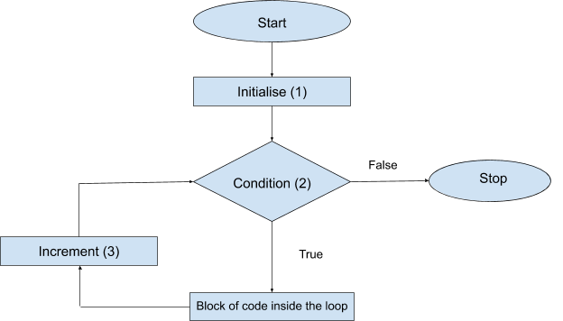

Most often while writing code, we need to perform a task over and over again till our work is done! This can be achieved by the concept of loops. In loops, we check the condition of ‘Is the work done?’ every time before doing the work. Thus, eventually, when the work gets finished we break out of that loop.
Note that it is very important to have a breaking condition in the loop else the loop would continue forever and it will become an infinite loop.
There are 3 main types of loops:-
Every loop has an iterator or a variable whose condition is checked in every loop. All these loops serve similar purposes (especially for and while loop) but vary in syntax.
For loop:
Syntax:-
for( statement 1 ; statement 2 ; statement 3)
{
...
}
Flowchart:-

Statement 1 (initial statement):- It gives the starting value for the iterator or variable. Typically this statement consists of variable initialization or declaration. This statement only executes once when the loop is executed first.
Statement 2 (limiting condition):- This statement tells us till what limit or range can the given iterator go till. If this statement or expression evaluates to false, the loop terminates immediately.
Statement 3 (increment):-This condition tells us how the iterator or variable changes after each step during the execution of the loop. After the condition 3 has been evaluated, the loop returns to condition 2.
Firstly statement 1 is initialized and statement 2 is checked. If it is true then the block of code inside the loop is executed. Here on after, statement 3 is implemented and statement 2 is checked and the loop goes on until statement 2 becomes false.
Here is an example of for loop to print the number on the console:
Output:- 1 2 3 4 5 6 7 8 9 10
We can also declare the iterator or variable inside the for loop.
It is possible to write for loops that omit any or all of the expressions.For example,in the following example we will omit initial statement.
for (;;)
statement;
Output:- 1 2 3 4
There is another version of for loop to iterate over elements of array.For example,in the following example the for loop iterates over an array "arr".
Output:- 1 2 3 4 5
Here we can see that the n contains the values of the iterator.
While loop:
While loop is similar to for loop but syntax is very different.
Syntax:-
{ // the block starts here
initial-statement;// here the initialization or declaration of variable
will be done
while (condition)
{
statement(s);
end expression;
}
} // variables defined inside the loop go out of scope here
We can see that while loop checks the condition and is executed whenever
the condition is true.
Output:- 1 2 3 4
It is important to keep a check-in while loop, that is we have to stop it
from running unlimited times.
The 2 most common ways of doing so are break or end expression.
Break in while loop:-
We always have to keep in mind that the while loop doesn't run an indefinite number of times, so we add a break statement within an if condition or normally in the while loop if it has to run only once.
Output:- 1 is here
2 is here
Here we can see that the loop would run indefinite times if we didn’t add break in the if condition with break in it.
End expression in while loop:- It is really important to keep an increment or decrement expression inside the while loop. This statement keeps increment or decrement the variables declared on the initial statement in the while loop and prevents it from running indefinitely.
Output:- 1 3 5 7 9 Here we can see that the loop would run indefinitely if we remove the end expression i.e line 10.
Do-While loop:
Do while loop is similar to while loop. The major difference is that do-while loop will be executed at least once. Do statement is executed first and then the condition in while is checked. If the while condition is true then the do statement is executed and so on.
Syntax:-
do
{
statement(s);
}
while( condition );
Here is an example of do-while loop to show that it executes at least once.:-
Output:- 1 is here
Here we can see that do is executed even though the while condition is
false.
Similar to while, we need to keep in mind that the do-while loop can
run indefinitely, hence we need a break statement or an end expression.
Happy Coding 😊
By Programmers Army
Contributed by: Tanmay Garg